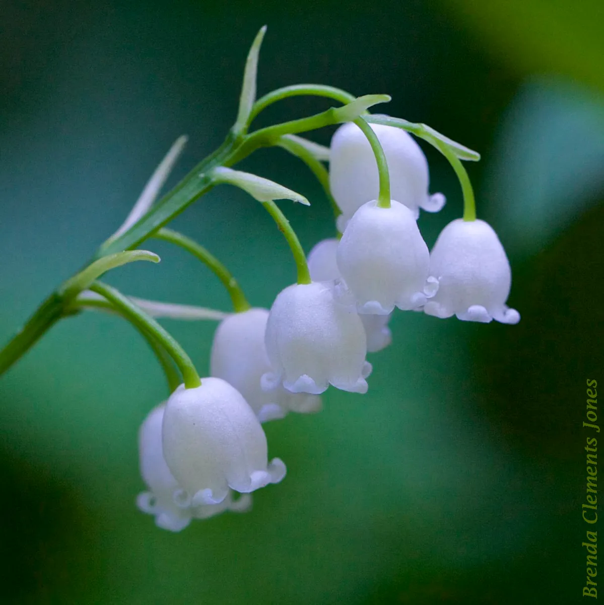

I water a lot of plants. Never too many of them, but sometimes
too little. Each plant is special, it needs its own water,
type of water, food, and more. Each plant is unique.
Sometimes I see other plants. Sometimes I wonder why my plants
cant be like other plants. But then I remember my plants are
better. My plants are always better, because theyre mine.
Occasionally I get the chance to add another plant. I like my
plants a certain way, and the seeds arent garunteed to sprout.
I dont want to force myself to water a plant. That takes too
much effort. Im very picky about my plants, and most people
arent.
I like my plants to be thoughtful. To be caring, intelligent,
funny. Everyone wants their plants like these, but its hard
for me to find the right plants for me.
Sometimes the plants dont like me either. Sometimes I water
and water a seed that will never grow, even though other
people have been able to grow the same plant fine. I wish the
seed would tell me that. But not all of them can. Its a hard
thing to do as a seed yknow.
Thats why Im picky with plants. I only have so much water to
go around. Some people have a lot of water, theyll water all
the seeds they can get, even if not all of them sprout. But
not me. Im always open to more plants, but I wont even give a
drop to some seeds.
But when I get a plant from a seed, its my favorite thing
ever.
Sometimes a plant is special. Not that the rest of my plants
arent great, but sometimes a plant goes beyond my
expectations. These plants are special to me.
I keep these plants close to me. Closer than anything else.
Sometimes I give them more than water, and Ill spill myself
into them. I wont do this for other plants.
These plants require sacrifice of myself. To take risks I
wouldnt normally, just to keep them growing. A lot of times
the plants wont ask, but I will anyways. Because thats how
much the plant means to me.

Once I had a seed I once hated. I took a chance
The seed sprouted. It became a beautiful flower. The more
water I poured in the prettier it became.
It became my favorite plant. I would give and give myself,
until there was little left to give.
One day however, the plant stopped growing. I kept spilling
myself more and more, more than I ever promised. The plant
began withering.
The plant kept withering. I kept watering. I spilled the
deepest parts of myself, without noticing the plant did not
care.
The plant promised it would grow. I waited so very long. It
kept withering
Why would the plant want to wither now. after all that weve
been through? Can I really do nothing?
I got rid of the plant
The plant lied
The plant is gone.
Im drowning.
Im tired of drowning
Yet im still watering the empty pot.
Im still watering so many empty pots
and theyre building up
Why cant I grow a pretty flower
One day I will grow a pretty flower, prettier than all those before
If by some chance the person associated with this flower is
reading, im over it. I shouldve left you on blocked the first
time. But the pot is stll being watered.